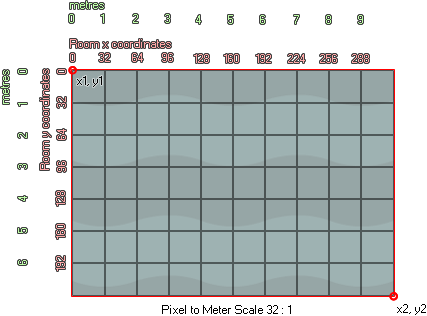

physics_world_create(pixeltometrescale);
| Argument | Description |
|---|---|
| pixeltometrescale | defines the ratio of pixels on screen to metres in the real world. A ratio of 32:1 will be specified as 1/32 (or 0.03125). |
Returns : N/A
Even if you have defined the physics for your objects, without a world to place them in they will default to the traditional GameMaker:Studio collision system, so you need this function to create the
physics system for the specified room either in an object event, or the creation code of the room itself (it can also be defined without using code in the room editor). This function will associate a physics "world"
with the roomand all instances created in the room will behave using the physics that has been defined for them and the world itself.

You'll notice that we have an argument that defines a ratio between pixel size and metres. This is because the physics functions work using real-world measurements and thus we must translate pixel coordinates
and pixel sizesinto these real-world measurements using a "pixel to metre scale". You'll want to adjust the pixeltometrescale setting until the average pixel size of the objects you are using translates roughly
into simulated physics objects of an appropriate size, and above you can see that we have set it to 32 pixels being the equivalent of 1 metre. It should be noted that the physics system will work with larger and
smaller ratios, but that the best performance is when the real world measurements ofyour objects are no less than 0.1 metres and no more than 50 metres.
physics_world_create(1/32)
The above code will create a physics world in the current room with a scale ratio of 32 pixels being the equivalent of 1 metre.